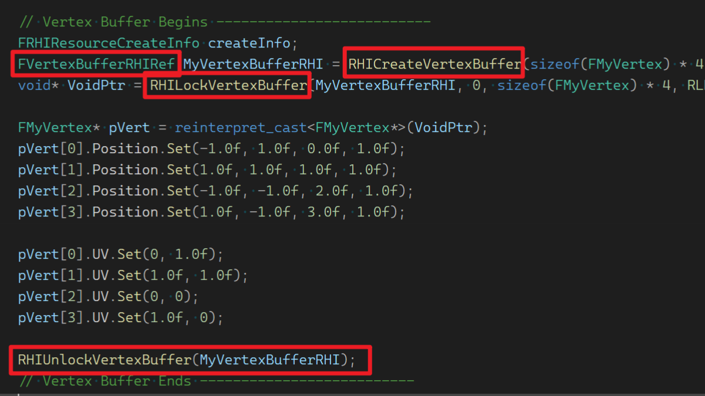
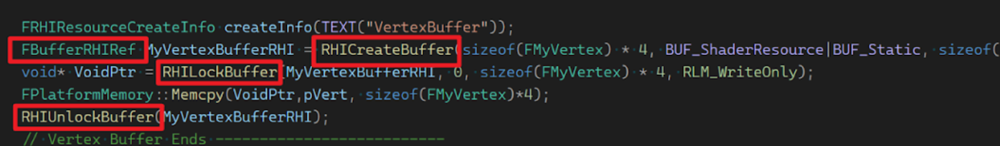
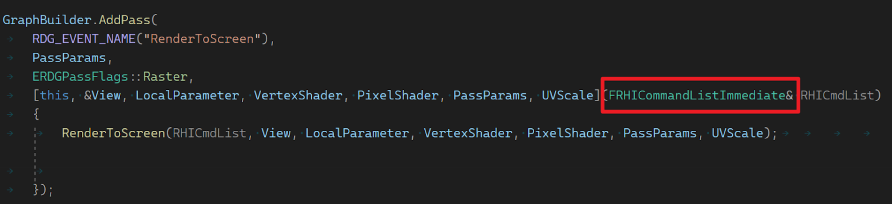

UE5 渲染开发的变化和注意事项
UE5版本:5.03
FPostOpaqueRenderParameters的变化
在UE4中就有了 RegisterPostOpaqueRenderDelegate 和 RegisterOverlayRenderDelegate 这两个函数，他们都使用一个FPostOpaqueRenderDelegate类型的参数。在这两个函数的帮助下，我们可以不用修改引擎代码，直接在独立的文件/插件中向渲染管线中增加自己需要的功能。
// RenderModule.h
virtual FDelegateHandle RegisterPostOpaqueRenderDelegate(const FPostOpaqueRenderDelegate& InPostOpaqueRenderDelegate) override;
virtual void RemovePostOpaqueRenderDelegate(FDelegateHandle InPostOpaqueRenderDelegate) override;
virtual FDelegateHandle RegisterOverlayRenderDelegate(const FPostOpaqueRenderDelegate& InOverlayRenderDelegate) override;
virtual void RemoveOverlayRenderDelegate(FDelegateHandle InOverlayRenderDelegate) override;
class FPostOpaqueRenderParameters
{
public:
FIntRect ViewportRect;
FMatrix ViewMatrix;
FMatrix ProjMatrix;
FRDGTexture* ColorTexture = nullptr;
FRDGTexture* DepthTexture = nullptr;
FRDGTexture* NormalTexture = nullptr;
FRDGTexture* VelocityTexture = nullptr;
FRDGTexture* SmallDepthTexture = nullptr;
FRDGBuilder* GraphBuilder = nullptr;
FRHIUniformBuffer* ViewUniformBuffer = nullptr;
TRDGUniformBufferRef<FSceneTextureUniformParameters> SceneTexturesUniformParams = nullptr;
TRDGUniformBufferRef<FMobileSceneTextureUniformParameters> MobileSceneTexturesUniformParams = nullptr;
const FGlobalDistanceFieldParameterData* GlobalDistanceFieldParams = nullptr;
void* Uid = nullptr; // A unique identifier for the view.
const FViewInfo* View = nullptr; //UE5 新增的参数
};
DECLARE_MULTICAST_DELEGATE_OneParam(FOnPostOpaqueRender, class FPostOpaqueRenderParameters&);
typedef FOnPostOpaqueRender::FDelegate FPostOpaqueRenderDelegate;
但是彼时FPostOpaqueRenderDelegate的参数FPostOpaqueRenderParameters中缺少重要的一项,那就是 FViewInfo，现在UE5中有了该项，我们就可以获取当前视窗的更多数据，可以说基本上和通过修改源码直接在渲染管线中增加渲染功能的自由度是差不多的。例如我们需要增加的渲染和当前视窗的FOV，窗口尺寸有关系的话，现在我们就可以使用这个功能而免去修改源码之苦了。
使用范例
//.h
class FRadiationRenderer
{
public:
FRadiationRenderer();
~FRadiationRenderer();
void Render(FPostOpaqueRenderParameters& InParameters);
private:
FDelegateHandle RenderHandle;
class FRadiationModule* RadiationModule;
};
//.cpp
FRadiationRenderer::FRadiationRenderer()
:RadiationModule(nullptr)
{
RenderHandle = GetRendererModule().RegisterOverlayRenderDelegate(FPostOpaqueRenderDelegate::CreateRaw(this, &FRadiationRenderer::Render));
RadiationModule = &FModuleManager::GetModuleChecked<FRadiationModule>("Radiation");
}
FRadiationRenderer::~FRadiationRenderer()
{
GetRendererModule().RemoveOverlayRenderDelegate(RenderHandle);
RenderHandle.Reset();
}
//...
void FRadiationRenderer::Render(FPostOpaqueRenderParameters& InParameters)
{
//...
}
GraphicsPipelineStateInitializer的变化
现在UE5中VertexShader和PixelShader设置参数需要在绑定Shader以及设置了GraphicsPipeline之后进行，否则会报错。UE4中这些顺序似乎无关紧要，都能正常运行。
FGraphicsPipelineStateInitializer GraphicsPSOInit;
RHICmdList.ApplyCachedRenderTargets(GraphicsPSOInit);
//省略了一些设置...
GraphicsPSOInit.BoundShaderState.VertexShaderRHI = vs.GetVertexShader(); // 绑定VertexShader
GraphicsPSOInit.BoundShaderState.PixelShaderRHI = ps.GetPixelShader(); // 绑定PixelShader
SetGraphicsPipelineState(RHICmdList, GraphicsPSOInit,0); // 设置了GrahpicsPipelineStateInitializer
RHICmdList.SetViewport(View.ViewRect.Min.X, View.ViewRect.Min.Y, 0.0f, View.ViewRect.Max.X, View.ViewRect.Max.Y, 1.0f);
// 这里才可以正常的设置shader参数
vs->SetParameters(RHICmdList, params);
SetShaderParameters(RHICmdList, ps, ps.GetPixelShader(), *Parameters);
Buffer类型统一
RHICreateVertexBuffer, RHICreateIndexBuffer都统一为RHICreateBuffer FVertexBufferRHIRef, FIndexBufferRHIRef都统一为FBufferRHIRef RHILockVertexBuffer，RHILockIndexBuffer都统一为RHILockBuffer RHIUnlockVertexBuffer, RHIUnlockIndexBuffer都统一为RHIUnlockBuffer
UE4: 
UE5: 
数据类型的变化
UE5中涉及到渲染，向量类型都有所改变，否则会得到错误的结果。 FVector2D变为FVector2f, FVector变为 FVector3f FVector3f的初始化： FVector3f(FVector类型数据)
注意，在UE5中，但凡涉及到上传到GPU的数据，包括顶点布局结构，StructuredBuffer等，都统一需要使用FVector2f,FVector3f,FVector4f这样的数据，否则会出现错误。自定义的结构体中的成员也是一样。
GraphBuilder.AddPass的变化
GraphBuilder.AddPass的Lambda函数传入参数必须是 FRHICommandListImmediate类型，否则Lambda函数会在逻辑线程执行。4.26中使用FRHICommandList是可以保持在渲染线程的。 